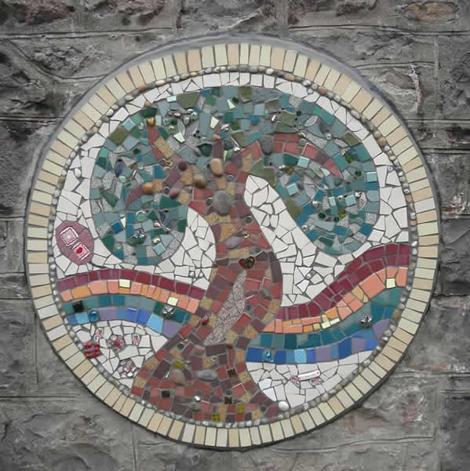

Mosaic mural created by the children, their parents and teachers for their school vegetable garden.
Click below for full images
“I’ve just seen the mosaic. It is superb! So beautiful and tastefully done! Thank you so much.”
Location - Ysgol Ffairfach, Ffairfach, Llandeilo
Partner – Gardd Y Plant Kindergarden
Funded by – The National Lottery Breathing Places
Cob Buildings
The children made cob sculptures of the historic buildings around Haverfordwest. Cob is a fun and sticky mixture of sub-soil, sand, straw and water and is also a traditional building material.
Click below for full images
“The buildings look truly amazing- what a fantastic way to learn about buildings and building materials. We will definitely be in touch when we get more funding.”
Where – Waldo Williams Primary School, Haverfordwest
Funded by – Tywi Centre
Memorial Mosaic

A mosaic remembering Willow Rose Rainbow, created with her friends. The children chose highly textural mosaic pieces for this artwork.
Click below for full image
Location – Craig-Y-Parc School for disabled children and those with profound and multiple learning difficulties, Cardiff.
Partner – Gardd Y Plant Kindergarden
Funded by – Willow's family, Dani Lee Arts in kind


{kind=link}
{kind=link}